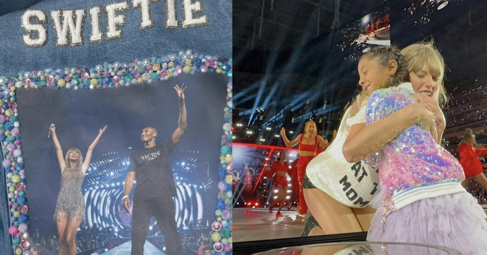

Taylor Swift hugs Kobe Bryant's daughter Bianka during Eras Tour concertTaylor Swift fans flocked to SoFi Stadium in Los Angeles this week — and for Kobe Bryant's family, it was an extra special occasion. Vanessa Bryant, the widow of the NBA legend, took their daughters to the concert and honored her late husband and daughter, Gigi, who died in a helicopter crash in 2020. Vanessa donned a custom denim jacket with an image of her husband and Swift together on stage. The image was taken in 2015, when Bryant presented Swift with a banner for setting the record for most sold out shows at the Staples Center. Bryant was very familiar with the Staples Center, now the Cyrpto.com Arena, since he played all of his home games on the court while starring of the Los Angeles Lakers. Vanessa's jacket also had an emblem with embroidered Swift lyrics: "Say you'll remember me," from the song "Wildest Dreams." She also honored her family members by wearing beaded bracelets with their names. Swift fans often wear homemade bracelets to her shows and swap them with fellow concertgoers. Vanessa and Kobe shared three other daughters together – Natalia, now 20, Bianka, now 6, and Capri, now 3. At the concert, Bianka got a surprise most Swifties only dream of – Swift went over to the edge of the stage and hugged her. Vanessa posted an image of the embrace and other shots from the concert on Instagram writing: "We love you @taylorswift." It appears the Bryant girls are longtime fans of Swift. Vanessa also posted a video of Natalia singing a Taylor Swift song with Gigi, who died at age 13. Kobe and Gigi were traveling to a basketball game via helicopter with seven others when it crashed into the hills of Calabasas, California on January 26, 2020. Everyone onboard was killed. After the crash, a memorial at the Staples Center was held in honor of the basketball star and those killed. During an emotional speech, Vanessa remembered Gigi as an "amazingly sweet and gentle soul" and Kobe as "romantic." "Babe, you take care of our Gigi," she said to close her speech. for more features. |
 |